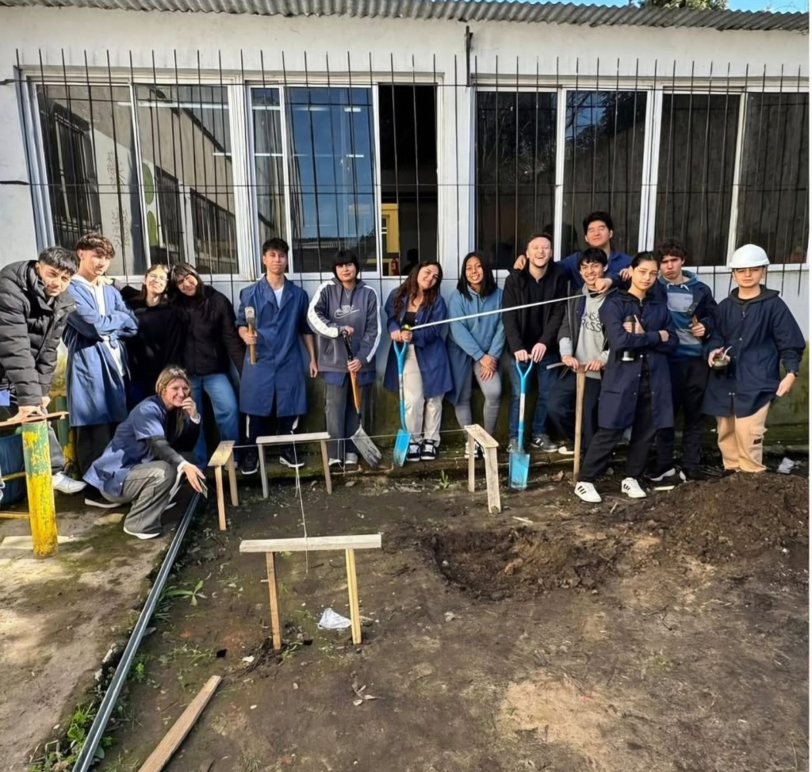
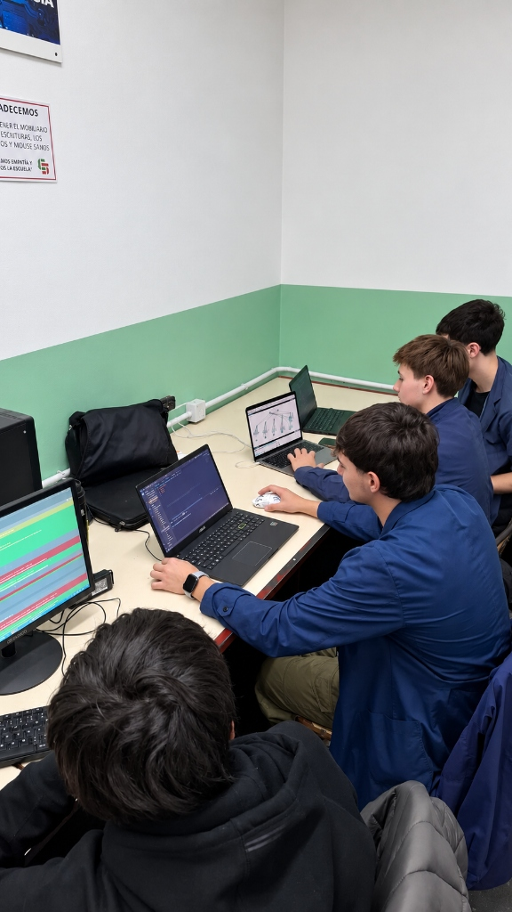
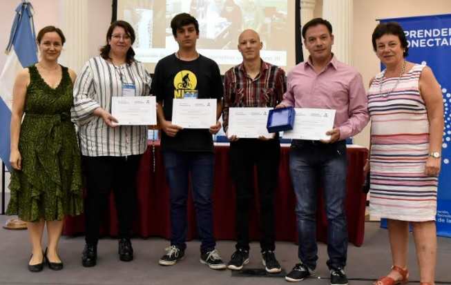
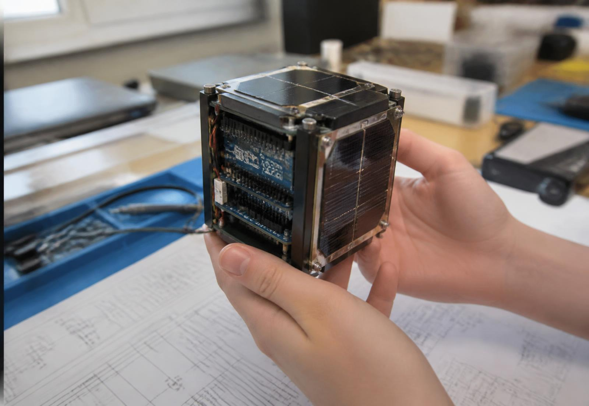
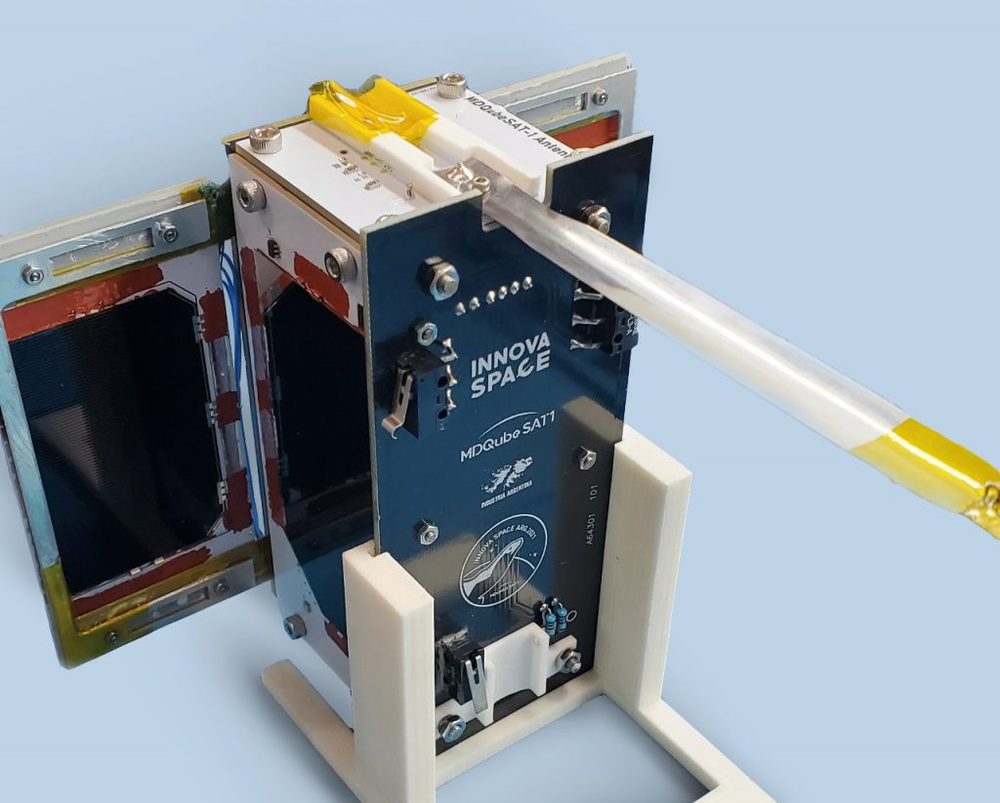
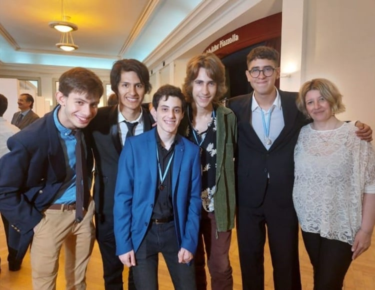
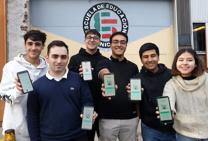
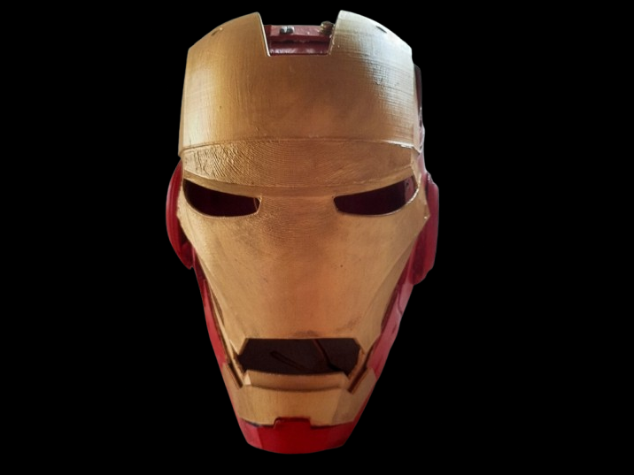

Diseño, planificación, representación y ejecución de proyectos vinculados con la construcción y las
obras civiles: dibujo técnico, materiales, estructuras, cómputo y dirección de obra.

02
Técnico en Informática Profesional y Personal
Informática
Tecnologías de la información, programación, sistemas, redes y desarrollo de soluciones informáticas,
con laboratorio, hardware y proyectos de software aplicados.

03
Técnico en Electrónica
Electrónica
Diseño, análisis, montaje y aplicación de sistemas y dispositivos electrónicos: circuitos,
instrumentación, medición, control y automatización.
Cada año deja múltiples proyectos construidos. Tocá cada hito para ver más información, imágenes y detalles del proyecto.
2018
FaciliArt · Impresión 3D solidaria para la salud
Estudiantes y docentes desarrollaron FaciliArt, un proyecto solidario utilizando impresoras 3D para la confección de prótesis de miembros superiores, férulas inmovilizadoras y bio-réplicas anatómicas a partir de tomografías computadas.

PROYECTO DESTACADO
FaciliArt · Impresión 3D solidaria para la salud
Estudiantes y docentes desarrollaron FaciliArt, un proyecto solidario utilizando impresoras 3D para la confección de prótesis de miembros superiores, férulas inmovilizadoras (reemplazo higiénico del yeso) y bio-réplicas anatómicas a partir de tomografías computadas. Las piezas fueron donadas al Hospital Materno Infantil (HIEMI) de Mar del Plata para permitir a los médicos planificar cirugías complejas. El proyecto fue distinguido en el certamen Docentes Innovadores 2018.
Alumnos y docentes distinguidos en el Palacio Sarmiento.
2019
SatDuino · primer nano satélite escolar de Sudamérica
Desarrollo y lanzamiento del primer nano satélite escolar de Sudamérica, integrando conocimientos de electrónica, programación y comunicaciones.

PROYECTO DESTACADO
SatDuino · primer nano satélite escolar de Sudamérica
Estudiantes de 7.º año y docentes diseñaron y construyeron SatDuino, un nano satélite de 5 × 5 × 5 cm —del tamaño de un cubo mágico— pensado para proveer tecnología espacial de muy bajo costo, con aplicaciones en el cuidado del medio ambiente y la agricultura. El prototipo se fabricó en tamaño real y funciona.
Por ser el primer nano satélite de Sudamérica diseñado por estudiantes secundarios, el equipo fue invitado al 3.º Congreso Mundial de Nano Satélites en Glasgow, Escocia, y viajó el 1.º de septiembre de 2019 con apoyo de la provincia de Buenos Aires. La comunidad vendió bonos contribución desde la cooperadora para costear parte de la estadía.
Diseño y desarrollo de un picosatélite educativo con el objetivo de fomentar la investigación tecnológica y el trabajo interdisciplinario en la escuela.

PROYECTO DESTACADO
Picosatélite MDQube-SAT1 “General San Martín”
Desarrollo del primer picosatélite de Latinoamérica en la escuela técnica (EEST N°5) por estudiantes y el profesor Alejandro Cordero. Diseñado para brindar conectividad de Internet de las Cosas (IoT) en áreas rurales, dio origen a la startup Innova Space y fue lanzado al espacio desde Cabo Cañaveral a través de SpaceX.
"Recordame" · App con IA para personas con Alzheimer
Aplicación móvil que utiliza inteligencia artificial para ayudar a personas con Alzheimer a recordar rutinas, eventos y contactos importantes.

PROYECTO DESTACADO
"Recordame" · App con IA para personas con Alzheimer
Estudiantes de 7.º año de Informática desarrollaron "Recordame", una aplicación multimedia orientada a facilitar el reconocimiento de personas y recuerdos en personas con Alzheimer. El proyecto integró programación, reconocimiento facial, fotografías, música y recursos digitales con una problemática social concreta, sumando geolocalización y juegos de estimulación cognitiva.
Desarrolladores de Recordame junto a la docente Paola Flament
2023 2024
"Tranqui" · App de prevención y orientación
Desarrollo de una aplicación orientada a la prevención y orientación en temáticas de salud mental, con recursos, contactos y herramientas interactivas.

PROYECTO DESTACADO
"Tranqui" · App de prevención y orientación
Estudiantes de Informática participaron en el desarrollo y actualización de "Tranqui", una aplicación de prevención y orientación articulada con la Facultad de Psicología de la Universidad Nacional de Mar del Plata y profesionales especializados. La propuesta integró tecnología y concientización social, recibiendo posteriormente tratamiento institucional en el ámbito municipal.
Construcción del casco de Iron Man mediante modelado e impresión 3D, ensamblado y pintura, integrando hardware electrónico con servomotores y luces LED.

PROYECTO DESTACADO
Casco Iron Man y Asistente JARVIS
Construcción del casco de Iron Man mediante modelado e impresión 3D, ensamblado y pintura, integrando hardware electrónico con servomotores y luces LED. Además, se desarrolló JARVIS, un asistente de inteligencia artificial offline para el control del sistema por voz y automatización.